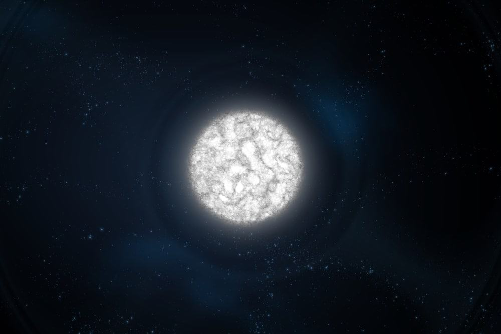
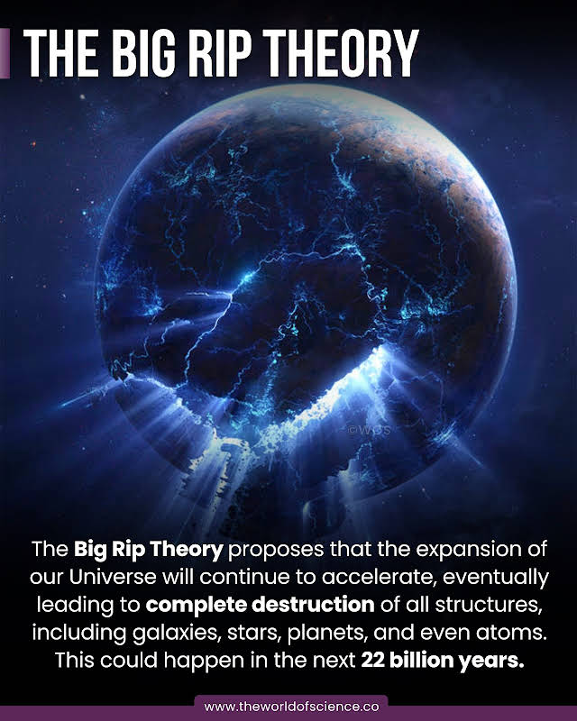
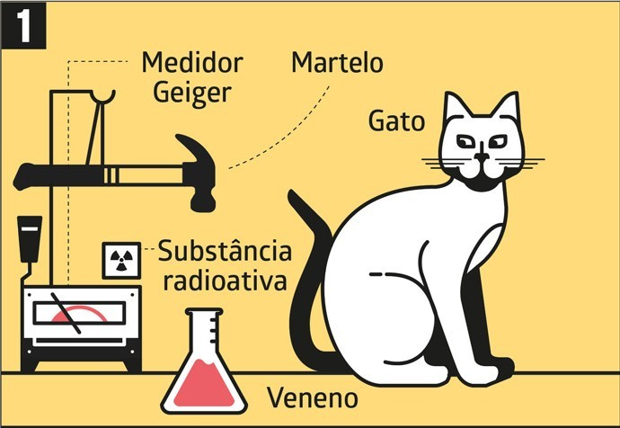

- Home
- Costa e Silva
- Turmas
Uns treco de ciência aí
Eu vou escrever uns troço de ciência e é isso
Daqui aproximadamente 5 bilhões de anos o Sol morrerá e virará uma anã branca, e qualquer espécie que poderia estar habitando o sistema solar vai morrer lenta e dolorosamente. 
The Big Rip é uma teoria que afirma que daqui varios bilhões de anos a velocidade de expansão do universo se tornaria tão grande que todas as galaxias se isolariam, e passados alguns bilhões de anos os próprios átomos se desintegrariam.
Resumindo, o gato de schrodinger é um experimento relativamente antiético que propõe que um gato dentro de uma caixa com um material radioativo não está nem vivo e nem morto e só entrará em algum desses estados quando abrirmos a caixa e descobrirmos se ele morreu ou não.